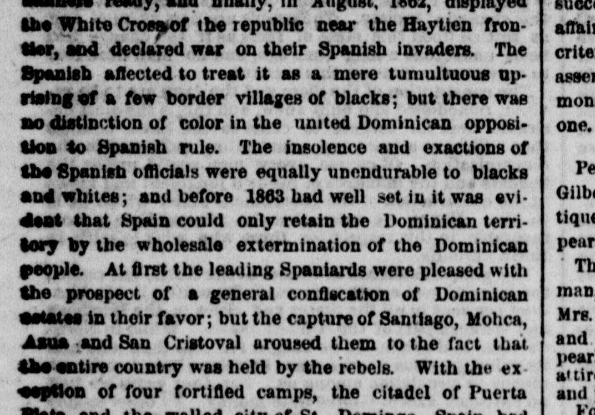
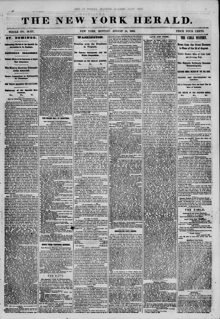

People At first the leading Spaniards were pleased with the prospectAl principio, los principales españoles estaban complacidos con la perspectiva
The New York Herald. New York [N.Y.], August 14, 1865. Page 1. View the originalVer el original


See the full pageVer la página completaThe New York Herald reported that following the capture of Santiago, Molica, and San Cristoval by rebels, Spain retained control over only a few fortified locations while the Dominican republic held the rest of the country from its seat of government in Santiago. Spanish garrisons were enclosed in Samana for two years and are now leaving the territory they failed to subjugate. Additionally, once the Dominican government regained possession of its entire territory (aside from Spain's fortified exceptions), it sent an envoy to the United States regarding the protection of U.S. citizens.The New York Herald informó que, tras la toma de Santiago, Moca y San Cristóbal por los insurrectos, España solo conservaba el dominio de contados puntos fortificados, mientras que las autoridades de la República Dominicana controlaban el resto de la nación desde su sede gubernativa en Santiago. Las guarniciones españolas permanecieron cercadas en Samaná durante dos años y evacuaban finalmente el territorio que no pudieron someter. Asimismo, tan pronto como el gobierno dominicano recuperó el control de casi toda la geografía patria (salvo las plazas fuertes españolas), despachó un enviado a los Estados Unidos para tratar lo concerniente a la protección de los ciudadanos estadounidenses.
FULL TEXT:TEXTO COMPLETO:
the White Cross of the republic near the Haytien frontier, and declared war on their Spanish invaders. The Spanish affected to treat it as a mere tumultuous uprising of a few border villages of blacks; but there was no distinction of color in the united Dominican opposition to Spanish rule. The insolence and exactions of the Spanish officials were equally unendurable to blacks and whites; and before 1863 had well set in it was evident that Spain could only retain the Dominican territory by the wholesale extermination of the Dominican people. At first the leading Spaniards were pleased with the prospect of a general confiscation of Dominican estates in their favor; but the capture of Santiago, Mohca, Azua and San Cristoval aroused them to the fact that the entire country was held by the rebels. With the exception of four fortified camps, the citadel of Puertala Cruz Blanca de la república cerca de la frontera haitiana, y declararon la guerra a sus invasores españoles. Los españoles afectaron tratarla como un mero levantamiento tumultuoso de unas pocas aldeas fronterizas de negros; pero no hubo distinción de color en la unida oposición dominicana al dominio español. La insolencia y las exacciones de los funcionarios españoles eran igualmente insoportables para negros y blancos; y antes de que 1863 hubiera bien comenzado, era evidente que España solo podría retener el territorio dominicano mediante el exterminio total del pueblo dominicano. Al principio, los principales españoles se complacían con la perspectiva de una confiscación general de las propiedades dominicanas en su favor; pero la toma de Santiago, Mohca, Azua y San Cristoval les hizo ver el hecho de que todo el país estaba en manos de los rebeldes. Con excepción de cuatro campamentos fortificados, la ciudadela de Puerta